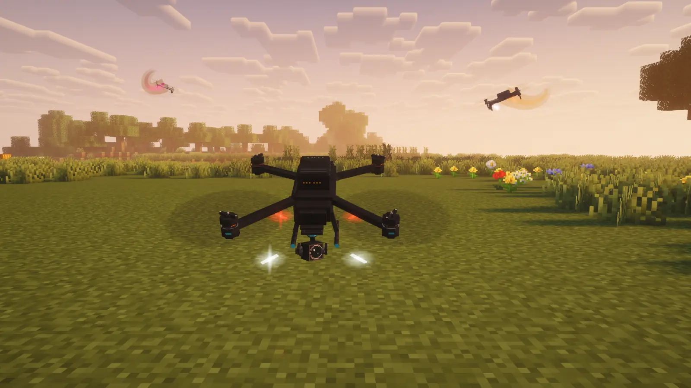

Add-onsOfficial add-onOffizielles Add-on
Propwash: Camera Drones
Camera drones that fly themselves, for Propwash FPV. Let go of the sticks and the drone stops in the air: it holds its position by GPS, carries a stabilized 3-axis gimbal camera and flies missions you plan on a tablet. A second player can steer the camera with their own radio.
Kameradrohnen, die selbst fliegen, für Propwash FPV. Lass die Knüppel los, und die Drohne bleibt in der Luft stehen: Sie hält ihre Position per GPS, trägt eine stabilisierte 3-Achsen-Gimbal-Kamera und fliegt Missionen, die du auf einem Tablet planst. Ein zweiter Spieler kann die Kamera mit seiner eigenen Funke steuern.

- Version
- 1.0.0
- NeedsBraucht
- Propwash 0.6.0 or newerPropwash 0.6.0 oder neuer
- Minecraft
- 26.3 · Fabric · NeoForge
- PartsTeile
- 19 (3 framesRahmen · 2 stacksStacks · 3 motorsMotoren · 3 propsProps · 2 video systemsVideosysteme · 3 batteriesAkkus · 3 accessoriesZubehörteile)
- LicenseLizenz
- PolyForm Shield 1.0.0
Play Propwash with others on the community server mc.propwashfpv.com, with Fabric or NeoForge.Spiel Propwash mit anderen auf dem Community-Server mc.propwashfpv.com, mit Fabric oder NeoForge. About the serverZum Server
What it bringsWas es mitbringt
- Compact, Tour and Cine: 244 g and about 30 min of hover, 720 g and about 41 min with a wide and a tele camera, or 3.8 kg and about 26 min with a 360° gimbal and lenses of 24, 50 and 85 mm. Ready to fly in their own creative tab.
- Compact, Tour und Cine: 244 g und etwa 30 min Schwebeflug, 720 g und etwa 41 min mit Weitwinkel- und Telekamera oder 3,8 kg und etwa 26 min mit 360°-Gimbal und Objektiven mit 24, 50 und 85 mm. Flugfertig in ihrem eigenen Kreativ-Tab.
- 19 parts with real-world values: folding frames, nav flight controllers with GPS, compass and barometer, low-KV motors, folding props, smart batteries, digital camera links and gimbals. Every part has a survival recipe, and you build at Propwash’s workbench.
- 19 Teile mit echten Werten: Faltrahmen, Nav-Flight-Controller mit GPS, Kompass und Barometer, Motoren mit niedriger KV, Faltpropeller, Smart-Akkus, digitale Kameralinks und Gimbals. Jedes Teil hat ein Rezept im Überlebensmodus, gebaut wird an der Werkbank von Propwash.
- Propwash’s own physics: wind, gusts, prop wash and the battery curve stay as they are. The add-on brings the parts and a flight assist on top.
- Die Physik von Propwash: Wind, Böen, Propwash und die Akkukurve bleiben, wie sie sind. Das Add-on bringt die Teile und eine Flughilfe obendrauf.
- Obstacle sensors: the Nav Flight Controller Pro (Tour and Cine) slows down in front of walls and stops about 1.5 m away, with a beep that gets faster.
- Hindernissensoren: Der Nav Flight Controller Pro (Tour und Cine) bremst vor Wänden und hält etwa 1,5 m davor, mit einem Piepen, das schneller wird.
- Two cameras: the FPV camera is for the pilot, the stabilized gimbal for the shot, and Delete switches your view. Save the gimbal picture as a video or photo, or record its camera path for Flashback (Fabric).
- Zwei Kameras: Die FPV-Kamera ist für den Piloten, das stabilisierte Gimbal für die Aufnahme, und Entf wechselt die Sicht. Speichere das Gimbal-Bild als Video oder Foto oder nimm seinen Kamerapfad für Flashback (Fabric) auf.
Getting startedErste Schritte
- Put Camera Drones next to Propwash FPV 0.6.0 into the mods folder (Fabric or NeoForge), on the server and on every client.Leg Camera Drones neben Propwash FPV 0.6.0 in den Ordner mods (Fabric oder NeoForge), auf dem Server und auf jedem Client.
- Take a ready-to-fly Compact, Tour or Cine from the add-on’s creative tab, or craft the parts and build the drone at Propwash’s workbench.Nimm eine flugfertige Compact, Tour oder Cine aus dem Kreativ-Tab des Add-ons, oder stell die Teile her und bau die Drohne an der Werkbank von Propwash.
- Fly it like any Propwash drone. Let go of the sticks and it holds its position.Flieg sie wie jede Drohne von Propwash. Lässt du die Knüppel los, hält sie ihre Position.
- Sneak and right-click your parked drone with the Flight Planner to pair it. Click blocks to set waypoints, then press Send and Start.Klick deine abgestellte Drohne schleichend mit dem Flugplaner an, um sie zu koppeln. Klick Blöcke an, um Wegpunkte zu setzen, und drück dann Senden und Start.
Four Flight School chapters show the add-on in short scenes: hold M over a camera part, the Flight Planner or the landing pad.
Vier Kapitel der Flugschule zeigen das Add-on in kurzen Szenen: Halt M über ein Kamerateil, den Flugplaner oder den Landeplatz.
Flight modesFlugmodi
Camera drones fly by speed, not by rotation rates: the sticks set how fast the drone moves, and when you let go it brakes and holds. The flight mode key and the flight mode switch of your radio choose the mode, just like Propwash’s modes.
Kameradrohnen fliegen nach Tempo, nicht nach Drehraten: Die Knüppel geben vor, wie schnell sich die Drohne bewegt, und lässt du los, bremst sie und hält. Die Flugmodus-Taste und der Flugmodus-Schalter deiner Funke wählen den Modus, genau wie die Modi von Propwash.
| ModeModus | What it doesWas er macht |
|---|---|
| N | Normal: the sticks set the speed, let go and the drone brakes and holds its position by GPS. The default, on Propwash’s mode Angle.Normal: Die Knüppel geben das Tempo vor, loslassen bremst, und die Drohne hält ihre Position per GPS. Der Standard, auf dem Modus Angle von Propwash. |
| C | Cine: like N with smoothed sticks, cine speed and a slow yaw for calm shots. On Horizon.Cine: wie N mit geglätteten Knüppeln, Cine-Tempo und langsamer Gier für ruhige Aufnahmen. Auf Horizon. |
| S | Sport: manual flight up to the Sport speed of the class, without obstacle braking. The fastest mode, on Acro.Sport: manueller Flug bis zum Sport-Tempo der Klasse, ohne Bremsen vor Hindernissen. Der schnellste Modus, auf Acro. |
| ATTI | Without a GPS fix (in caves, under blocks) or with a compass error the drone only holds its height and drifts with the wind; the OSD says so.Ohne GPS-Empfang (in Höhlen, unter Blöcken) oder mit Kompassfehler hält die Drohne nur ihre Höhe und treibt mit dem Wind; das OSD sagt es an. |
By default the drone climbs at most 120 m above its take-off point, a world rule. Propwash’s GPS rescue brings it home like every Propwash drone, and at 20 % battery the flight assist starts the return home once by itself.
Standardmäßig steigt die Drohne höchstens 120 m über ihren Startpunkt, eine Welt-Regel. Die GPS-Rettung von Propwash holt sie zurück wie jede Drohne von Propwash, und bei 20 % Akku startet die Flughilfe die Heimkehr einmal von selbst.
Flight PlannerFlugplaner
The Flight Planner is a tablet you hold in your hand; your radio stays Propwash’s radio. Click blocks to drop waypoints into the world, add them in flight or record a flight. The editor shows a map from above and a list of waypoints with height, speed, wait time, gimbal tilt, look direction and photo or recording actions, templates for a circle, a reveal and a line, and the length, time and battery a mission needs.
Der Flugplaner ist ein Tablet, das du in der Hand hältst; deine Funke bleibt die Funke von Propwash. Klick Blöcke an, um Wegpunkte in die Welt zu setzen, setz sie im Flug oder nimm einen Flug auf. Der Editor zeigt eine Karte von oben und eine Liste der Wegpunkte mit Höhe, Tempo, Wartezeit, Gimbal-Neigung, Blickrichtung und Foto- oder Aufnahme-Aktionen, Vorlagen für einen Kreis, einen Reveal und eine Linie und die Länge, Zeit und den Akku, die eine Mission braucht.
- Send and start: the drone takes off by itself, flies the mission and keeps flying when you take off the goggles. Put them back on and you take over.
- Senden und starten: Die Drohne startet von selbst, fliegt die Mission und fliegt weiter, wenn du die Brille absetzt. Setzt du sie wieder auf, übernimmst du.
- Hold, follow me, point of interest and course lock: an air tripod for minutes at a time, a drone that follows you, circles what is in the middle of the picture or flies straight while the camera turns.
- Halten, Follow me, Point of Interest und Kurs halten: ein Stativ in der Luft für Minuten, eine Drohne, die dir folgt, kreist um das, was in der Bildmitte ist, oder geradeaus fliegt, während die Kamera dreht.
- Landing pad: put it where the drone should land. A camera drone flying without a pilot centres itself above the pad and touches down in its middle.
- Landeplatz: Stell ihn dorthin, wo die Drohne landen soll. Eine Kameradrohne, die ohne Pilot fliegt, richtet sich über dem Platz aus und setzt in seiner Mitte auf.
- Waypoint actions: take a photo, start or stop a recording, or press an accessory action like the keys in flight, for example a dispenser of Mob Defense or Propwash’s gripper.
- Wegpunkt-Aktionen: ein Foto machen, eine Aufnahme starten oder stoppen oder eine Zubehör-Aktion auslösen wie die Tasten im Flug, etwa einen Dispenser aus Mob Defense oder den Greifer von Propwash.
- FPV drones too: the planner also flies freestyle, race and long-range drones on the GPS of their flight controller, as long as nobody is wearing the goggles.
- Auch FPV-Drohnen: Der Planer fliegt auch Freestyle-, Race- und Long-Range-Drohnen über das GPS ihres Flight-Controllers, solange niemand die Brille trägt.
Gimbal and two pilotsGimbal und zwei Piloten
The gimbal keeps the horizon level while the drone rolls, tilts down to −90° and never shows the props. Invite a player within 16 blocks as camera operator, with Crew in the drone’s service menu or /camdrones crew invite <player>: they pan, tilt, zoom, record and take photos with their own radio while you fly. The camera keeps its direction in the world when you turn the drone; the cine gimbal pans all the way round.
Das Gimbal hält den Horizont gerade, während die Drohne rollt, neigt sich bis −90° und zeigt nie die Props. Lade einen Spieler im Umkreis von 16 Blöcken als Kameramann ein, mit Crew im Wartungsmenü der Drohne oder /camdrones crew invite <spieler>: Er schwenkt, neigt, zoomt, nimmt auf und macht Fotos mit seiner eigenen Funke, während du fliegst. Die Kamera behält ihre Richtung in der Welt, wenn du die Drohne drehst; das Cine-Gimbal schwenkt ganz herum.
FAQHäufige Fragen
What is different from FPV?Was ist anders als FPV?
A camera drone flies by speed, not by rotation rates: let go of the sticks and it stops in the air. It flies slower, much longer and films with a stabilized camera. For acrobatics and racing, take an FPV quad.
Eine Kameradrohne fliegt nach Tempo, nicht nach Drehraten: Lass die Knüppel los, und sie bleibt in der Luft stehen. Sie fliegt langsamer, viel länger und filmt mit einer stabilisierten Kamera. Für Akrobatik und Rennen nimm einen FPV-Quad.
Why does my drone say ATTI?Warum steht ATTI im OSD?
It has no usable position: no GPS fix under blocks or in caves, or a compass error. In ATTI it holds only its height, drifts with the wind and the obstacle sensors don’t brake. Fly back into the open; with a compass error, land and start again.
Sie hat keine brauchbare Position: kein GPS-Empfang unter Blöcken oder in Höhlen oder einen Kompassfehler. In ATTI hält sie nur ihre Höhe, treibt mit dem Wind, und die Hindernissensoren bremsen nicht. Flieg zurück ins Freie; bei einem Kompassfehler lande und starte neu.
Why did my mission end?Warum endet die Mission?
The chat message tells you why: you put the goggles on and took over, the drone landed, the battery ran low, you went offline, the drone left radio range, the time limit of the world rule was reached, someone stopped it, or another flight without a pilot replaced it.
Die Chatnachricht sagt es dir: Du hast die Brille aufgesetzt und übernommen, die Drohne ist gelandet, der Akku wurde knapp, du bist offline gegangen, die Drohne hat die Funkreichweite verlassen, das Zeitlimit der Welt-Regel war erreicht, jemand hat sie gestoppt, oder ein anderer Flug ohne Pilot hat sie abgelöst.
Can I use the Flight Planner with my freestyle drone?Kann ich den Flugplaner mit meiner Freestyle-Drohne nutzen?
Yes. Every Propwash drone has GPS in its flight controller. It needs a clear view of the sky and flies missions only without a pilot.
Ja. Jede Drohne von Propwash hat GPS im Flight-Controller. Sie braucht freie Sicht zum Himmel und fliegt Missionen nur ohne Pilot.
Why was a waypoint action skipped?Warum wurde eine Wegpunkt-Aktion übersprungen?
The chat message and the tooltip in the editor name the reason, for example no accessory with actions on the drone or no gripper for Release gripper. A dispenser follows its own rules: empty slot, cooldown, spawn protection or adventure mode.
Die Chatnachricht und der Tooltip im Editor nennen den Grund, etwa kein Zubehör mit Aktionen an der Drohne oder kein Greifer für Greifer öffnen. Ein Dispenser folgt seinen eigenen Regeln: leerer Slot, Abklingzeit, Spawn-Schutz oder Abenteuermodus.
Can I share a camera drone as a share code?Kann ich eine Kamera-Drohne als Sharecode teilen?
Yes, like every Propwash drone: in the game, in the configurator and on this website. Missions are not part of share codes. Someone without the add-on sees its name and where to get it, and a stand-in built from Propwash parts.
Ja, wie jede Drohne von Propwash: im Spiel, im Konfigurator und auf dieser Website. Missionen gehören nicht zum Sharecode. Wer das Add-on nicht hat, sieht seinen Namen und wo es es gibt, dazu einen Ersatz aus Teilen von Propwash.
Does it need to be installed on the server?Muss das Add-on auf den Server?
Yes, on the server and on every client. A player without the add-on gets Propwash’s join message with the name and version of the missing add-on instead of an error.
Ja, auf den Server und auf jeden Client. Ein Spieler ohne das Add-on bekommt beim Beitreten die Meldung von Propwash mit Name und Version des fehlenden Add-ons statt eines Fehlers.
Versions and serversVersionen und Server
- Camera Drones 1.0.0 needs Propwash 0.6.0 or newer, on Fabric or NeoForge, on the server and on every client.
- Camera Drones 1.0.0 braucht Propwash ab 0.6.0, auf Fabric oder NeoForge, auf dem Server und auf jedem Client.
- The server decides: it checks every mission, follow target and crew request. World rules in their own section Camera Drones set flights without a pilot, following other players (off by default and always with their consent), the second pilot, the altitude and distance limit and the time limit of flights without a pilot. None of them touches FPV races.
- Der Server entscheidet: Er prüft jede Mission, jedes Ziel von Follow me und jede Crew-Anfrage. Welt-Regeln in ihrem eigenen Abschnitt Camera Drones legen Flüge ohne Pilot fest, das Folgen anderer Spieler (standardmäßig aus und immer mit ihrer Zustimmung), den zweiten Piloten, die Höhen- und Entfernungsgrenze und das Zeitlimit für Flüge ohne Pilot. Keine davon berührt FPV-Rennen.
- Works with Just More Parts and Mob Defense. Camera drones and Mob Defense both use the front mount, so one drone carries either a gimbal or a Mob Defense accessory.
- Läuft zusammen mit Just More Parts und Mob Defense. Kameradrohnen und Mob Defense nutzen beide die vordere Halterung, eine Drohne trägt also entweder ein Gimbal oder ein Zubehörteil aus Mob Defense.
All partsAlle Teile
FramesRahmen 3
- Compact Folding Frame (250 mm)Faltrahmen Kompakt (250 mm)
- Tour Folding Frame (380 mm)Faltrahmen Tour (380 mm)
- Cine Frame (695 mm)Kino-Rahmen (695 mm)
Stacks 2
- Nav Flight Controller Compact (2–4S, 12 A)Nav-FC Kompakt (2–4S, 12 A)
- Nav Flight Controller Pro (3–6S, 45 A)Nav-FC Pro (3–6S, 45 A)
MotorsMotoren 3
- 1404 Motor, 1600 KV1404-Motor, 1600 KV
- 2008 Motor, 500 KV2008-Motor, 500 KV
- 4114 Motor, 320 KV4114-Motor, 320 KV
Props 3
- 6″ Folding Propeller (2-blade, 3.3″ pitch)6-Zoll-Faltpropeller (Zweiblatt, 3,3″ Steigung)
- 9″ Folding Propeller (2-blade, 4.5″ pitch)9-Zoll-Faltpropeller (Zweiblatt, 4,5″ Steigung)
- 15″ Folding Propeller (2-blade, 7.5″ pitch, carbon-fiber nylon)15-Zoll-Faltpropeller (Zweiblatt, 7,5″ Steigung, Carbon-Nylon)
Video 2
- Camera Link Compact (digital, 120 ms)Kamera-Funk Kompakt (digital, 120 ms)
- Camera Link Pro (digital, 100 ms)Kamera-Funk Pro (digital, 100 ms)
BatteriesAkkus 3
- 2S 3850 mAh Smart Battery (Li-Ion)2S-Smart-Akku 3850 mAh (Li-Ion)
- 4S 4240 mAh Smart Battery (LiHV)4S-Smart-Akku 4240 mAh (LiHV)
- 6S 8560 mAh Smart Double Pack (LiHV)6S-Smart-Doppelpack 8560 mAh (LiHV)
AccessoriesZubehör 3
- 3-Axis Gimbal Compact3-Achsen-Gimbal Kompakt
- 3-Axis Gimbal Tour (wide and tele)3-Achsen-Gimbal Tour (Weitwinkel und Tele)
- 360° Cine Gimbal (lens bay)360°-Kino-Gimbal (Objektiv-Fach)
License and source codeLizenz und Quellcode
Camera Drones is source-available under the PolyForm Shield License 1.0.0 with additional permissions, like Propwash FPV: modpacks may include the unchanged release files, and an exit clause makes the code MIT licensed after 12 months without a release or maintainer activity. The documentation is MIT licensed. What the licenses allow, in plain words.
Camera Drones ist wie Propwash FPV source-available, unter der PolyForm Shield License 1.0.0 mit Zusatzerlaubnissen: Modpacks dürfen die unveränderten Release-Dateien enthalten, und eine Ausstiegsklausel stellt den Code unter MIT, wenn es 12 Monate lang kein Release und keine Aktivität des Maintainers gibt. Die Doku steht unter der MIT-Lizenz. Was die Lizenzen erlauben, in klaren Worten.